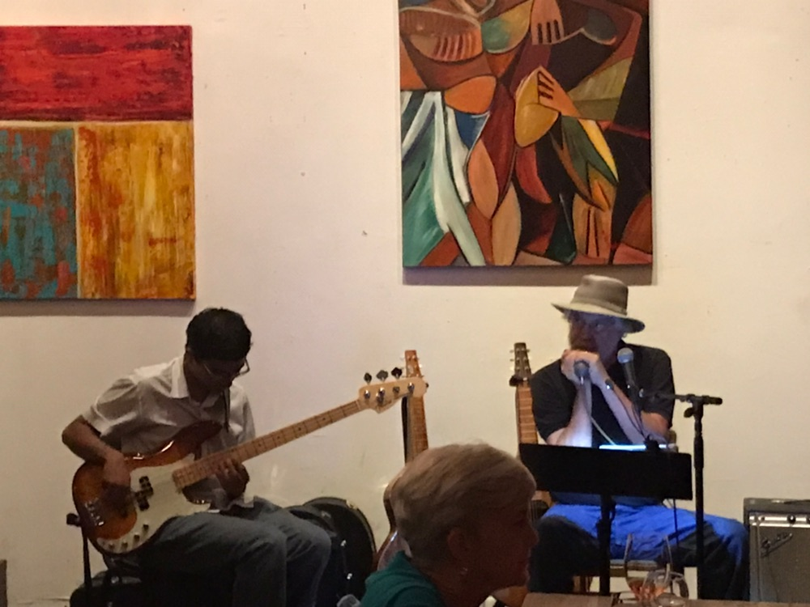

Sunset in Marfa, 2016
I am a second-year Eugene McDermott Scholar at the University of Texas at Dallas studying physics. With an interest in astronomy, I assist Dr. Kaloyan Penev in developing software for citizen scientists to perform high-precision photometry and participate in UTD's chapter of the Society of Physics Students by organizing star parties. I concurrently pursue my interest in music as an electric bassist.
I trace my love for both astronomy and music back to my twelve years at St. Mark's School of Texas. During my senior year, I studied astronomy and planetarium operations with Dr. Steve Balog, Cecil H. and Ida Green Master Teaching Chair in Science and Director of the Planetarium and Observatory, visiting the McDonald Observatory and presenting several shows to large audiences. I also played bass for the St. Mark's Jazz, Blues, Pep, and Concert Bands, the Greater Dallas Youth Orchestra's advanced jazz combo, and the TPSMEA All-State Jazz Band '15-'17.
While I am unsure of the extent to which my career will synthesize astronomy and music, I am confident that some form of teaching will become central to my professional life. My service as a branch manager for IntelliChoice.(a free math tutoring organization) and as an assistant for technology classes at the Richardson Public Library has led me to view teaching as an opportunity to impart the skills and values needed to succeed as a leader in an increasingly quantitative and automated world. I will continue to share the beauties of astronomy and music to ignite the curiosity, sense of awe, and capacity to wonder in my audiences.
I play regularly with the Crosswinds Jazz Band, Stephen Houpt, and Addis (a jazz/fusion/world group). I occasionally sit in with the St. Mark's Blues Club, a charity-based blues band I played in and led as a high school student. I also play in a jazz combo hosted by the Helbing Jazz Initiative under the direction of bassist James Driscoll. I study privately with Chris Hicks (master's student in Jazz Composition at UT-Arlington) and have previously studied with Brian Mulholland.
I am currently recording a demo album primarily featuring solo bass. It will be available for download on this website in mid- late-November.

Recording at Studio B at Audio Dallas. Thanks to Paul Osborn for the pictures.
| Location | Date | Time | With |
|---|---|---|---|
| Austin Street Homeless Shelter | Thursday, November 29th, 2018 | 6:00-7:00 p.m. | St. Mark's Blues Club (community service) |
| St. Mark's Chapel (Upper School service) | Wednesday, November 28th, 2018 | 10:30-11:00 a.m. | Stephen Houpt |
| St. Mark's Chapel (Middle School service) | Tuesday, November 27th, 2018 | 10:30-11:00 a.m. | Stephen Houpt |
| Shebelle Ethiopian Cuisine & Bar | Saturday, November 17th, 2018 | 7:30-9:00 p.m. | Addis |
| The Wine Therapist | Friday, November 16th, 2018 | 8:30-11:30 p.m. | Stephen Houpt |
| Private event | Sunday, November 11th, 2018 | 5:00 p.m. | Isaac Byrd, Colman Burks, Mike Camerata |
| Private event | Sunday, November 4th, 2018 | 7:00-9:00 p.m. | Mike Camerata, Jamie Ringholm |
| Global Village Market @ Greenland Hills United Methodist Church | Saturday, November 3rd, 2018 | 1:00-3:00 p.m. | Stephen Houpt & Michelle Stroescu |
| The Wine Therapist | Saturday, October 20th, 2018 | 8:30-11:30 p.m. | Stephen Houpt |
| Austin Street Homeless Shelter | Thursday, October 11th, 2018 | 6:00-7:00 p.m. | St. Mark's Blues Club (community service) |
| Oak Creek Tennis Center | Saturday, September 29th, 2018 | 3:00-4:00 p.m. | Crosswinds Jazz Band (private event) |
| The Wine Therapist | Friday, September 21st, 2018 | 8:30-11:30 p.m. | Stephen Houpt |
| The Wine Therapist | Friday, August 17th, 2018 | 8:30-11:30 p.m. | Stephen Houpt |
| Dallas Athletic Country Club | Tuesday, August 7th, 2018 | 10:00-11:00 a.m | Stephen Houpt & Michelle Stroescu |
| The Wine Therapist | Friday, June 22nd, 2018 | 8:30-11:30 p.m. | Stephen Houpt & Michelle Stroescu |
For more information about my collaboration with Stephen Houpt, please visit his website.
Performing at the Wine Therapist with Stephen

Listening to our tracks at Audio Dallas Recording Studio.

Playing with Steve Miller at St. Mark's, 2015.

My current project: numerically solving this underdetermined equation to explain how a lower Db is heard when the notes above are played.

Johannes Kepler's planetary chords of 1599, which motivated me to sonify other solar-system mechanisms, like the Saros Cycle. from The Music of the Heavens by Bruce Stephenson.

The Saros cycle coincidentally resembles this chord played by Jaco Pastorius in Portrait of Tracy.
"'What is this great and pleasing sound that fills my ears?' I asked. 'That,' replied my grandfather, 'is a concord of tones separated by unequal but nevertheless carefully proportioned intervals, caused by the rapid motion of the spheres themselves. The high and low tones blended together produce different harmonies...[The] outermost sphere, the star-bearer, with its swifter motion, gives forth a higher-pithed tone, whereas the lunar sphere, the lowest, has the deepest tone.'"
-Cicero, De re publica